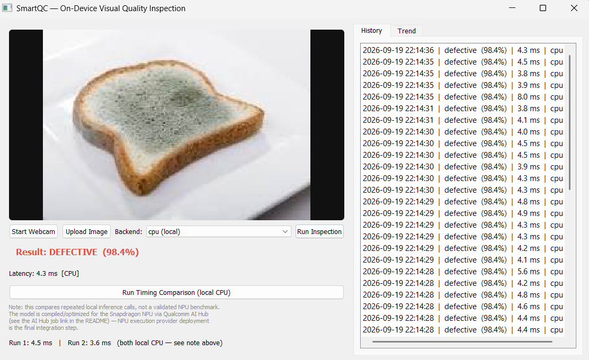
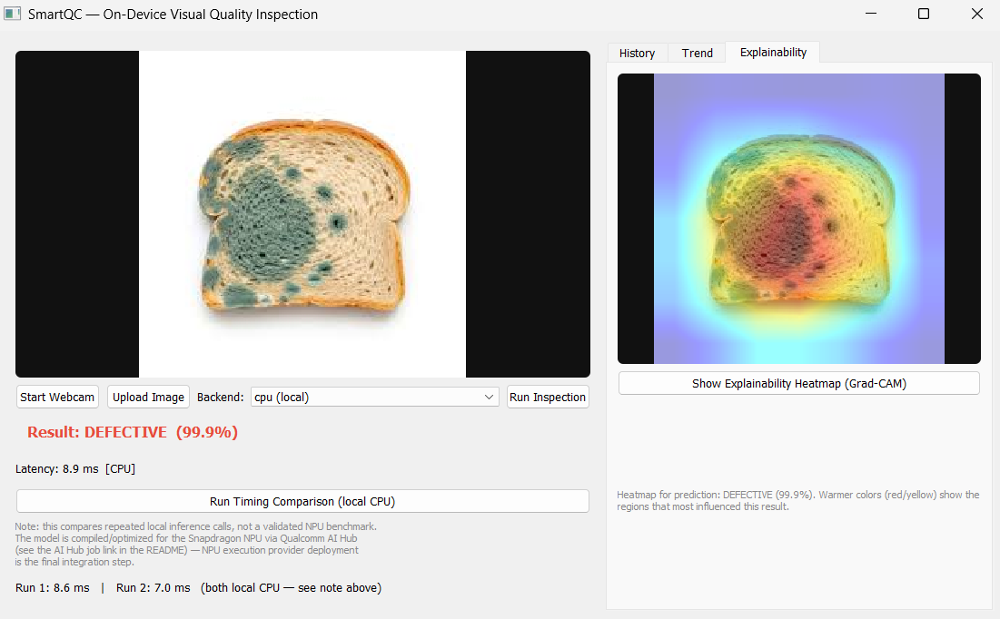
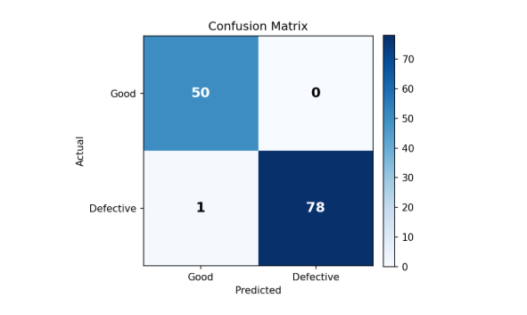
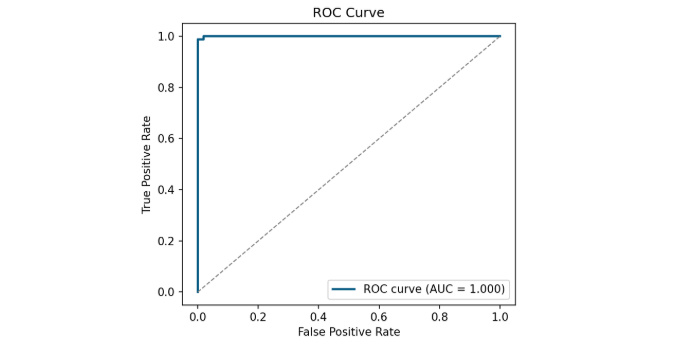

SmartQC: On-Device Visual Quality Inspection
Qualcomm | Snapdragon® AI Lab Challenge
- Defined the problem statement, target users, success criteria, and evaluation approach for an AI bread-mold inspection tool, owning it from scoping through implementation and evaluation.
- Built a PyQt5 desktop app combining image classification, Grad-CAM explainability, batch inspection with CSV export, and SQLite-based inspection history with trend tracking.
- Fine-tuned MobileNetV2 to 99.2% validation accuracy (0.9997 ROC-AUC) and optimized it for on-device Snapdragon NPU deployment via Qualcomm AI Hub.
- Validated on 352 uncurated real-world images (97.4% field accuracy) and added a confidence threshold that flags low-confidence predictions for manual review, keeping a human in the loop where the model is unsure.
- Tools/Technologies: Python, PyTorch, ONNX, Qualcomm AI Hub, PyQt5, OpenCV, Scikit-learn, SQLite

DEFECTIVE RESULT

GRAD-CAM EXPLAINABILITY

CONFUSION MATRIX

ROC CURVE
PROJECT DEMO